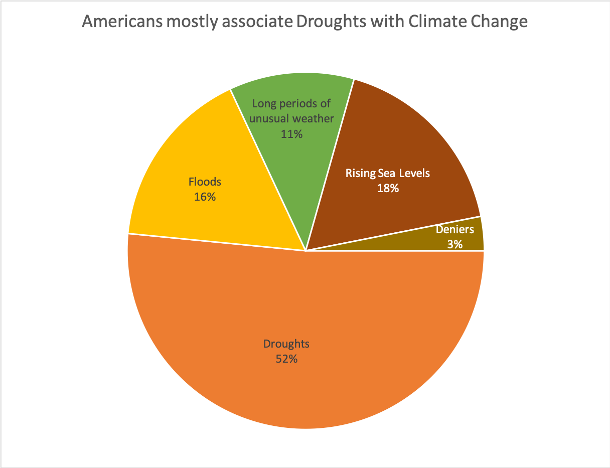

Rising Temperature has increased Natural Disasters, but do we care?
Scientific evidence has shown strong correlation between increasing atmospheric concentration of Carbon Dioxide, rising global temperature, and increasing frequency of natural disasters. Pew Centre conducted a survey to assess the concern around Climate Change, across a number of countries.
Please visit the relevant UN body's website to learn more.
The previous pages have shown the human and financial cost of these rising natural disasters, however, how do people associate climate change and natural disasters?
A Pew Research Centre Study shows that 44% of respondents associate disasters such as droughts, floods, and unusual weather with climate change.
The United States of America has a similar respondents' break up.

Less than half of all Americans are concerned about climate change as a whole. On analysis of 42 countries, it was found that this concern is not significantly correlated (0.18) with the human impact of natural disasters.